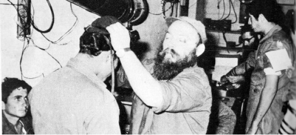

More Power to the Shluchim
I n the HaYom Yom entry for 20 Cheshvan, the Rebbe says that each of the shluchim are given special abilities from the one who sent them, and what is expected of them is that they use these kochos properly to illuminate their place of shlichus with the light of Torah, mitzvos and Chassidus. I asked some shluchim what special kochos they use and to share some stories of the actual results.

INSTRUCTIONS IN A DREAM
A shliach from Beit Shaan had a dream. He was in 770 at Mincha with the Rebbe. Toward the end of the davening, two Chassidim went over to the Rebbe and the Rebbe spoke to them about how t’filla is supposed to be. At a certain point, the Rebbe looked directly at one of the Chassidim. The shliach (who was dreaming) realized that he knew this Chassid who was a shliach in a big city in Eretz Yisroel.
The Rebbe said to him, “You need to daven in a place where they daven more slowly. You need to be careful not to talk during davening, at least for the first hour (of the davening on Shabbos). If you do so it will make a big kiddush Hashem.” End of dream.
As soon as he awoke, he called his fellow shliach and told him, “I have regards for you from the Rebbe. I saw in a dream that the Rebbe told you important things.” The shliach, of course, wanted to know what was said in the dream. When the shliach from Beit Shaan told him the details, there was a long silence on the other end of the phone.
“What’s the silence about?” asked the shliach from Beit Shaan. The other shliach told him he was in shock and explained why.
“A number of years ago, when we started the Chabad minyan here, there were some old-time Lubavitchers who joined us. They were not particular about coming on time to daven and sometimes they came with a towel (used for the mikva) on their shoulders. They walked among the benches, put their towel on the bima, or got into conversations with the mekuravim. They created an undesirable atmosphere in the Chabad house. Over time, the minyan dwindled until it stopped.
“Some time ago, I decided to start a minyan again, but this time I was determined to be a stickler about davening on time in a serious atmosphere without talking during the davening. Many mekuravim started coming to the Chabad house for t’fillos. I made sure to censure anyone who spoke during davening. The minyan was successful and it grew.
“Another year went by and I got tired of constantly making comments and having to be on guard. Some of the people started coming late and talking and I’ve been thinking about whether to continue my efforts to keep things in order and quiet. Then you call me with this message from the Rebbe.
“I consider this a clear sign from the Rebbe and I commit to seeing this through,” concluded the shliach.
ALL RISE TO RECEIVE THE REBBE’S ORDERS
R’ Levi Wilyamowsky told the following story as he heard it from R’ Moshe Naparstek who witnessed it.
The story took place many decades ago, when Kfar Chabad was in its nascent years and needed constant help from government offices. In those days, the Rebbe sent dozens of letters to Anash in Eretz Yisroel to encourage the development of the Kfar in a speedy way. Chabad leaders of the time used their connections to get money for construction and to develop the Kfar.
Letters from the Rebbe came constantly, urging more and more advancement and development of the plans to build the Kfar. At a certain point, government money was approved for these plans. All they needed to do was wait for a decision by the Solel Boneh company about when it would start construction. The matter dragged on and there seemed no end in sight to the delays.
One day, people in the Kfar heard that on that very day there would be a meeting in Tel Aviv of all the directors of Solel Boneh and that is when all decisions would be made. They thought this would be their opportunity to get things moving. R’ Zushe Wilyamowsky, the “Partisan,” now entered the picture. He “ordered” R’ Moshe Naparstek to join him and together they went to Tel Aviv to the Solel Boneh building.
R’ Zushe walked into the conference room in the middle of the meeting. All were surprised to see two bearded Chassidim interrupting their meeting, but the Partisan did not stop at red. He stood in the middle of the room and loudly announced, “There is an order from the Rebbe – all rise!” Well, apparently words from the heart, along with special kochos given to a shliach of the Rebbe, enter the heart. Everybody at the meeting rose to their feet.
R’ Zushe gleefully declared that the Lubavitcher Rebbe said the construction in Kfar Chabad had to be hurried along and finished by Rosh HaShana. When he finished his announcement he added, “All can be seated.”
After a few seconds of silence, the CEO of Solel Boneh asked to see the Rebbe’s order. R’ Zushe showed him the letter. On the spot, the CEO said that the building would be done before Rosh HaShana. A formal resolution was then made to this effect.
THE SHLIACH IS HERE – THE REBBE IS HERE
There are shluchim who absolutely do not want their names used in a magazine. That is the case with the shliach who told the following story at a farbrengen that took place during Tishrei in 770:
When I was in the army, some soldiers were sent on a complicated, dangerous mission deep within Egyptian territory. Due to the great importance of this mission, a very senior commander showed up and gave orders about the operation. When the operation was over, I went over to this senior commander and introduced myself as a Lubavitcher. I said to him with great confidence, “Until now you were the commander here over everyone, but now an order has come from an even higher commander, G-d, and He gave an order that t’fillin need to be put on.”
The senior commander was quite surprised but immediately said he would put on t’fillin, and that afterward, he would say why he did so.
As soon as he removed the t’fillin from his arm, the commander said the following:
This morning, while preparing for our operation, I was in “the Kiryah” (IDF headquarters) in Tel Aviv where I met with military leaders. Some Lubavitchers arrived and suggested that I put on t’fillin. I asked them why the Lubavitcher Rebbe does not make aliya and they said it was because the Rebbe sent emissaries to Eretz Yisroel and a person’s emissary is like himself, so it is just like the Rebbe himself is in Eretz Yisroel.
I argued with them a bit and finally said to them, “I am going to the Sinai now, deep in Egyptian territory. If there too, Chabadnikim will ask me to put on t’fillin on shlichus from the Rebbe, I will have to concede that the Rebbe is truly in Eretz Yisroel and I will put on t’fillin.”
Here I am and I immediately saw you, a soldier with a full beard, and I thought: If he is a Chabadnik, it will be interesting to see whether he will come over to me and suggest that I put on t’fillin. As soon as you came over to me, I had to admit that the Rebbe is here and the Rebbe’s shluchim are everywhere.
TO BELIEVE IN THE POWERS THE REBBE GIVES US
R’ Reuven Dunin, shliach of the Rebbe in Haifa, told the following story at a farbrengen with tears in his eyes:
During one of my first years on shlichus in Haifa, I visited the Rebbe. When I stood on line for lekach, the Rebbe gave me a large piece and said, “For all of Haifa.”
As I stood there I began to picture the scene of my standing in the center of Haifa and giving out cake from the Rebbe to all the passersby. It just didn’t seem realistic to me. All this took a split second. I asked the Rebbe, “For all of Haifa?!” The Rebbe smiled and said, “For Anash of Haifa.”
R’ Dunin began to cry more intensely and said at the farbrengen, see what a blankety-blank I am. The Rebbe told me to give it to all of Haifa and I minimized the task. I diminished the shlichus and caused the Rebbe to say just for Anash of Haifa.
We need to believe that the kochos the Rebbe gives us are unlimited. The Rebbe writes general letters “To All Jewish Boys and Girls.” The Rebbe says we need to provide a Jewish chinuch for all Jewish children. We have the ability and just need to make use of it. Do all that you can to bring the Geula!
Shmuelevitz. "More Power to the Shluchim." Beis Moshiach, no. 918 (March 5, 2014).